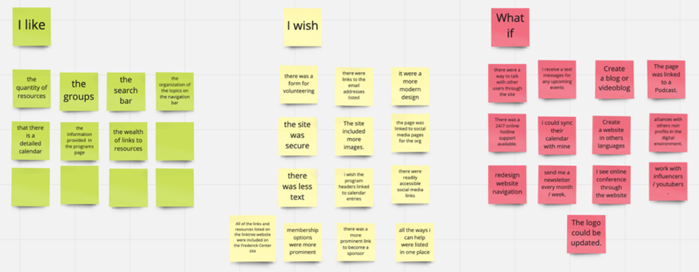
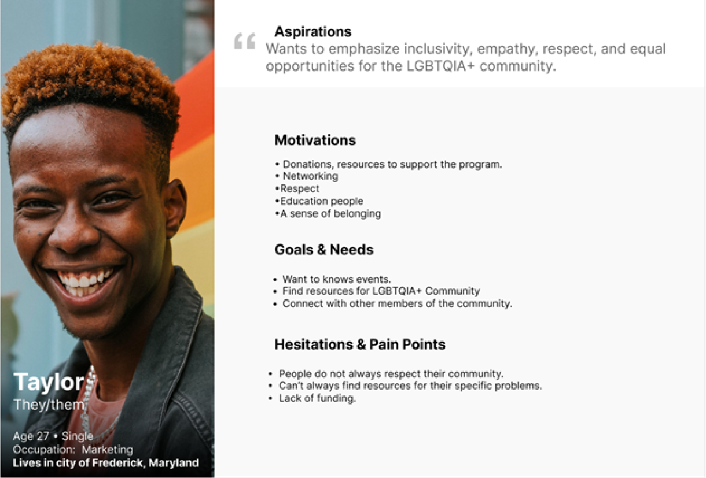
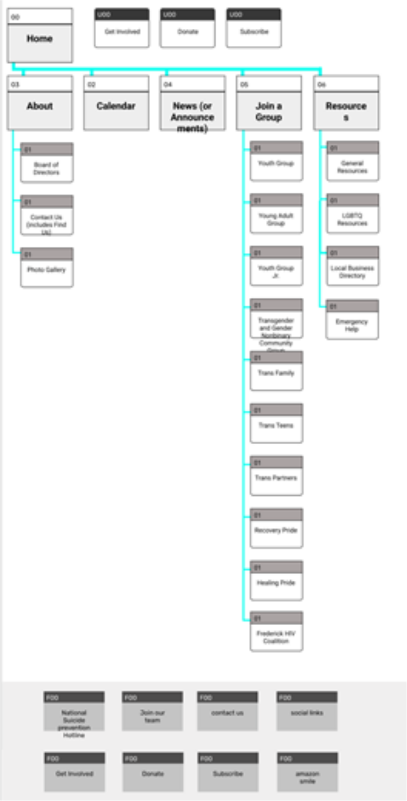

The Frederick Center
An all-new responsive web and mobile redesign of The Frederick Center a local non profit that helps members and allies of the LGBTQ+ community in Frederick, MD find resources and support.
Role
UI Designer
Timeframe+Deliverables
3 Weeks
High Fidelity Prototype
Desktop & Mobile Redesign
Tools
Figma
GSuite
InVision
Otter
Trello
Problem
The Frederick Center website was designed to provide a resource for the LGBTQ+ community in the Frederick, MD area. We have observed that our product or service isn’t eays to find the information users are looking for, which is causing less participation than desired. How might we improv the website to increase volunteer activity, increase donations and increase participation in events?
Solution
The LGBTQ+ community is a marginalized community that needs a stronger voice. We want to continue to bring more attention and focus to the LGBTQ+ community to make sure they have access to the same resources and information that other groups have access to. Want to emphasize inclusivity, empathy, respect, and equal opportunities for the community.
User Research
User Interviews + Usability Test
In order for our group to gain an understanding of why individuals use The Frederick Center website we conducted quantitative and qualitative research in the form of user interviews and conducting usability tests in the span of a week.
During usability testing and research our goals was to determine how and why users utilize The Frederick Center website and how they navigate the website to fit their needs.
We used this information to ideate and brainstorm the best solutions of the website redesign.
Key Takeaways
After compiling all of our data from interviews and ideating we identified key takeways that would help users overall experience and expecations with The Frederick Center website.
User Desire
- Updated content and information
- Easier navigation
- Secure donation experience
- Organized content on the programs page in order to find information that fits their needs.
Ideation
We used the “I Like, I Wish, What If” brainstorming method to organize key takeways found in our research during user interviews. This method helped us understand the information and features that users desire..
User Persona

Site Mapping
